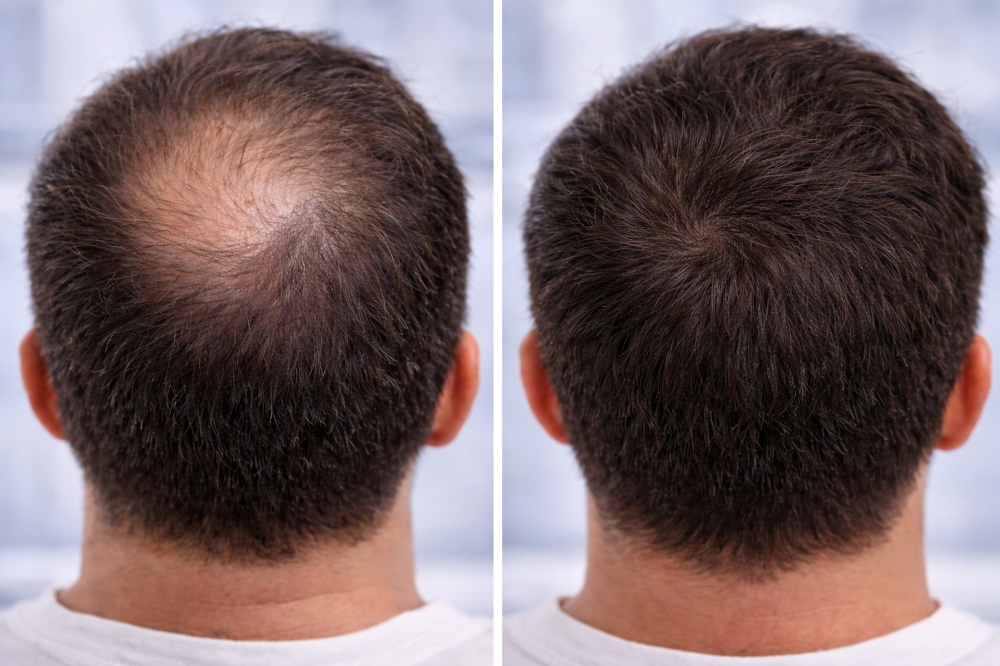
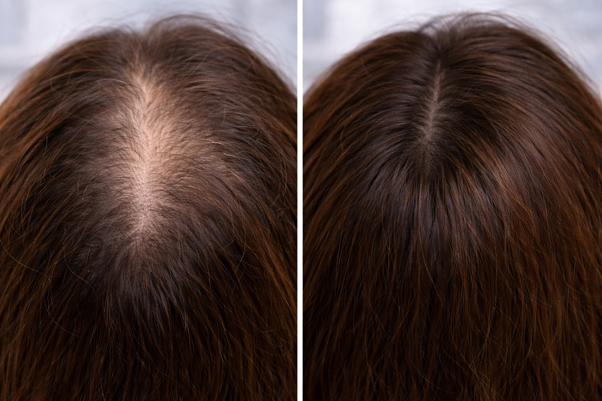
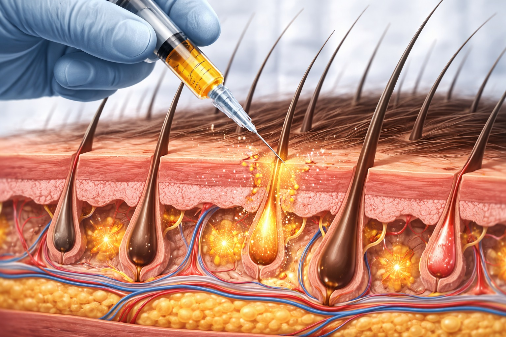
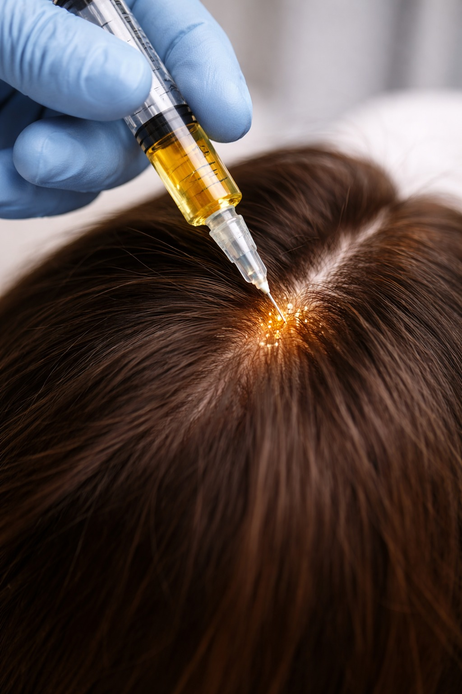

טיפול רפואי מתקדם לחיזוק זקיקי השיער ועידוד צמיחה
מזותרפיה לשיער היא טיפול רפואי מתקדם שמטרתו לעצור נשירת שיער, לחזק את זקיקי השיער ולעודד צמיחה חדשה — באמצעות החדרת חומרים פעילים ישירות לקרקפת.

בניגוד לתכשירים חיצוניים שנספגים באופן חלקי בלבד, המזותרפיה מאפשרת לחומרים הפעילים להגיע ישירות לאזורים שבהם הם נדרשים — לשכבת הדרמיס שבה נמצאים הזקיקים.
במהלך הטיפול מוחדרים לקרקפת חומרים פעילים כגון:
ההחדרה מתבצעת באמצעות מחטים עדינות לשכבת הדרמיס, שם נמצאים הזקיקים — כך החומרים מגיעים ישירות למקום הפעילות.

ניתן להבחין בשיפור ראשוני לאחר מספר טיפולים, עם המשך שיפור לאורך הסדרה.
המזותרפיה אינה "פתרון אחד לכולם". הקוקטייל המוחדר נבנה לפי:

לכן אבחון מקצועי לפני הטיפול הוא הכרחי — ולא אופציונלי.

ברויאל-מד, מזותרפיה לשיער משולבת לרוב בפרוטוקול כולל שכולל:
השילוב מאפשר תוצאות עמוקות ויציבות יותר לעומת מזותרפיה לבדה.
הטיפול מתאים לגברים ולנשים כאחד.
לפני תחילת טיפול, נדרש אבחון מקצועי לצורך התאמת הפרוטוקול המדויק עבורך.
תיאום תור טלפוני ללא עלות